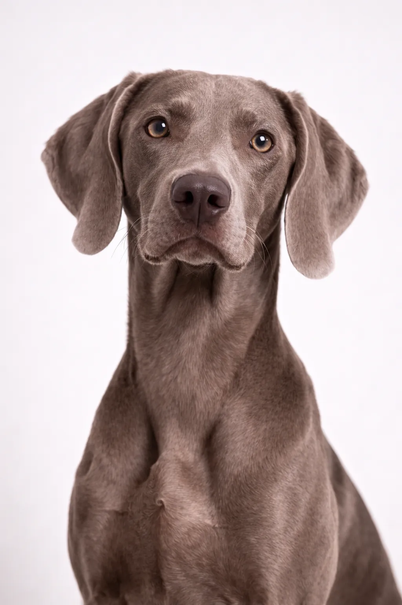

Weimarinseisoja
ystävällinen, fearless suuri rotu joka on ihana kumppani.
22-27 in
55-88 lbs
Rodun Arviot
Luonne
Yleiskatsaus
Weimararit ovat elegantteja, urheilullisia koiria, joilla on tunnusomainen harmaa turkki. Alun perin jalostettiin suurriistan metsästykseen, ja nykyään ne ovat suosittuja perheen seuralaisia aktiivisille omistajille.
Luonne
Weimarinseisoja tunnetaan ystävällisyydestään, pelottomuudestaan ja valppauttaan. Se on erinomainen lasten kanssa ja tekee upean perheen lemmikitstä. Älykkyys ja halu miellyttää tekevät koulutuksesta miellyttävää. Varhainen sosialisaatio auttaa siitä kehittymään tasapainoisen seuralaisen.
Terveys
Yleisesti terve rotu, jonka elinikä on 10–13 vuotta. Yleisiä terveyshuolia ovat lonkkadysplasia ja vatsanvääntymä. Säännölliset eläinlääkärikäynnit ja ennaltaehkäisevä hoito ovat tärkeitä. Terveellisen painon ylläpitäminen auttaa ehkäisemään monia terveysongelmia.
Liikunta
Runsasenerginen rotu, joka tarvitsee reipasta päivittäistä liikuntaa – vähintään tunnin verran aktiviteettia. Se kukoistaa aktiivisten perheiden seurassa, jotka nauttivat ulkoiluharrastuksista. Henkinen virikkeisyys koulutuksen ja arvoituslelujen avulla on yhtä tärkeää. Ilman riittävää liikuntaa se saattaa kehittää käytösongelmia.
⦿ Onko Tämä Rotu Sinulle Sopiva?
✓ Sopii Parhaiten
- Erittäin aktiiviset perheet
- Metsästäjät
- Juoksijat ja urheilijat
- Ne, joilla on iso piha
- Kokeneet koiranomistajat
✗ Ei Ihanteellinen
- Kerrostaloasukkaat
- Passiivinen elämäntapa
- Usein poissaolevat
- Ensikertalaiset
Meidän Arvio: Beautiful, athletic koirans that need extensive exercise. Weimarinseisojas ovat uskollisia kumppanis for aktiivinen omistajille but can develop separation anxiety. Ei sohvaperunoille tai those who work long hours.